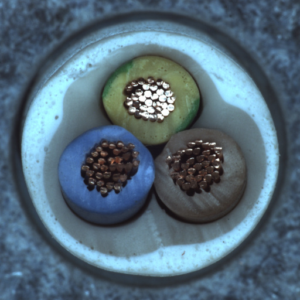
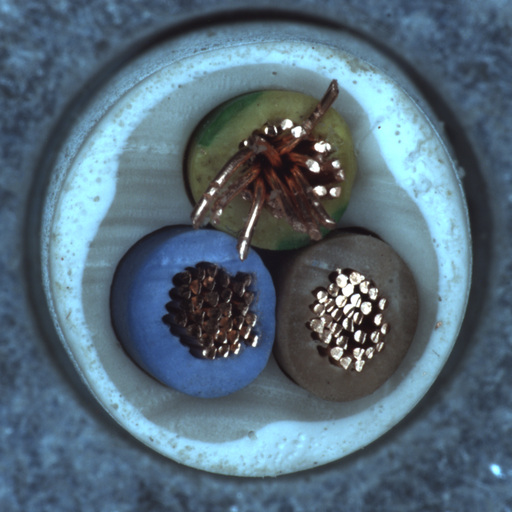
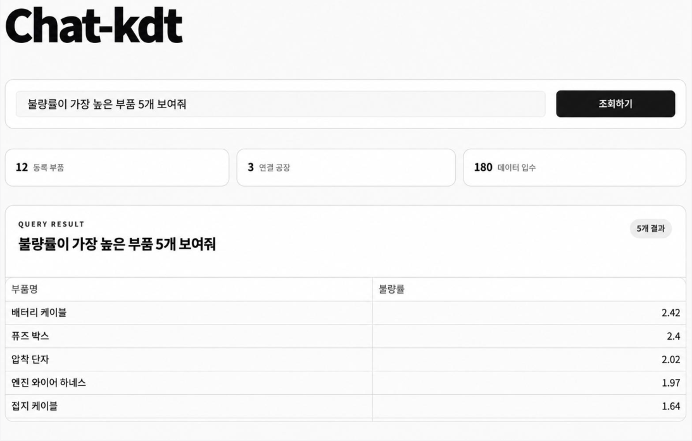

TRAINING PROJECTS · DATA / AI
AI·빅데이터 프로젝트
교육 과정에서 진행한 이미지 분류와 제조 데이터 조회 프로젝트입니다. 실험 조건과 결과, 적용 범위를 함께 정리했습니다.
케이블 이미지 정상·불량 분류
MVTec AD Cable의 케이블 단면 이미지를 정상·불량으로 판별하는 4인 팀 프로젝트입니다. 기본 CNN, 일반 증강 CNN, 정상 복원 기반 Autoencoder, EfficientNet-B0 전이학습을 분담해 비교했습니다.
공통 원본 분할은 학습 261장, 검증 56장, 테스트 57장입니다. 학습 방식에 따라 증강본 사용 여부와 입력 크기를 달리했습니다.


담당 역할 · 기본 CNN
기본 CNN 실험을 맡아 데이터셋을 찾고 라벨과 분할 구성을 점검했습니다. AI의 코드 작성 지원을 받아 모델을 구현·실행했으며, 실험 결과와 오분류 사례를 담당 발표자료로 정리했습니다.
데이터 구성과 실험 설정
- 데이터 구성 점검
- 처음 구한 데이터의 학습 폴더에는 정상 이미지만 있었습니다. 정상·불량 이진 분류에 맞춰 원본을 다시 나눈 데이터에서 학습 261장, 검증 56장, 테스트 57장과 각 클래스 수를 확인했습니다.
- 기본 CNN 실험
- 증강 효과가 섞이지 않도록 미리 생성된 증강 이미지를 제외했습니다. 정상 197장과 불량 64장을 사용했고, 불균형은 손실함수의 불량 가중치 3.078로 보정했습니다. 입력은 RGB 224×224, 모델은 사전학습 없는 4개 합성곱 블록으로 구성했습니다.
- 모델 선택과 평가
- 검증 불량 F1을 우선하고 동률이면 검증 손실을 비교해 모델을 저장했습니다. 5회차 모델을 선택한 뒤 테스트 57장으로 평가하고, 혼동행렬과 오분류 이미지를 확인했습니다.
개인 실험 결과
정확도는 77.19%, 불량 재현율은 50.00%, 불량 F1은 51.85%였습니다. 불량 14장 중 7장을 정상으로 판단했으므로, 전체 정확도와 함께 불량 미검출을 살펴볼 필요가 있었습니다.
| 실제 / 예측 | 정상 예측 | 불량 예측 |
|---|---|---|
| 실제 정상 | 37 | 6 |
| 실제 불량 | 7 | 7 |
팀 실험 비교
네 가지 접근법을 같은 테스트 데이터에서 비교했습니다. 전체 비교 수치는 아래에서 확인할 수 있습니다.
모델별 결과 보기
| 접근 | 정확도 | 불량 재현율 | 불량 F1 |
|---|---|---|---|
| 기본 CNN · 개인 담당 | 77.19% | 50.00% | 51.85% |
| CNN + 일반 증강 | 85.96% | 57.14% | 66.67% |
| Autoencoder* | 71.9% | 21.4% | 27.3% |
| EfficientNet-B0 | 92.98% | 71.43% | 83.33% |
* Autoencoder는 발표자료의 ‘90% Best F1’ 기준입니다. 기본 CNN은 원본 261장, 일반 증강 CNN은 불량 증강본 133장을 포함한 394장, Autoencoder는 정상 197장으로 학습했습니다. 원본 분할과 평가 대상은 공통이며 모델별 학습 조건은 다릅니다.
결과와 한계
팀 비교에서 EfficientNet-B0는 정확도 92.98%, 불량 F1 83.33%로 가장 높은 결과를 보였습니다. 이 경우에도 불량 14장 중 4장은 미검출했습니다. 공개 데이터의 단일 분할 실험이므로 실제 검사 환경의 성능과 구분해 해석했습니다.
산출물: 기본 CNN 실험 노트북, 학습 곡선·혼동행렬·오분류 분석, 4조 통합 발표자료.
Chat-kdt · 제조 데이터 조회
주제 제안부터 MariaDB 기반 초기 시제품 구현, 평가 결과 발표까지 참여했습니다.
SQL을 모르는 사용자도 미리 가공된 자료에만 의존하지 않고, 필요한 정보를 자연어로 질문해 조회할 수 있도록 기획한 팀 프로젝트입니다.
담당 역할
주제 제안·기획
제조 데이터를 자연어로 조회하는 프로젝트를 제안했습니다. 강사님과 구현 방향을 논의하고, 내용을 팀에 공유해 진행 범위를 협의했습니다.
초기 시제품 구현
MariaDB에 스키마와 테이블을 구성하고, 질문과 스키마 정보를 바탕으로 SQL을 생성해 DB 조회 결과를 Streamlit에 표시하는 흐름을 구현했습니다.
평가 결과 발표
팀의 모델 단독 결과와 규칙 기반 대체 처리를 포함한 최종 프로그램의 평가 결과를 정리해 발표했습니다.
초기 시제품과 팀 최종본
개인 시제품 · MariaDB
설비 데이터의 단일 테이블을 대상으로 자연어 질문 → SQL 생성 → DB 조회 → Streamlit 출력 흐름을 구성했습니다. 조회 흐름은 구현했지만, 다양한 질문과 DB 구조에 대응하기 위한 추가 학습이 필요했습니다.
팀 최종본 · SQLite
부품·공장·생산·품질·재고·설비의 6개 테이블을 대상으로 조회하는 시스템입니다. pko-T5-small 학습과 읽기 전용 SQL 검사, 규칙 기반 대체 처리(Fallback)를 포함했습니다.
질문과 스키마를 함께 해석하는 방식을 목표로 했으며, 새로운 데이터베이스 구조에 대한 범용성은 검증하지 않았습니다.


팀 평가 결과
발표자료의 내부 시험 질문 44개에서 모델 단독 조회 결과는 36/44개 일치(81.8%)로 기록됐습니다. 규칙 기반 대체 처리를 포함한 최종 프로그램은 44/44개가 일치했습니다.
최종 프로그램은 지원 질문에 대해 규칙 SQL로 결과를 비교하고 대체하는 구조입니다. 44/44는 내부 시험 범위의 결과이며, 모델 자체의 정확도나 새로운 질문 전반에 대한 성능을 의미하지 않습니다.
모델·프로그램 평가 비교
| 평가 항목 | 모델 단독 | 대체 처리 포함 프로그램 |
|---|---|---|
| SQL 일치 | 36/44 | 40/44 |
| SQL 실행 가능 | 43/44 | 44/44 |
| 조회 결과 일치 | 36/44 | 44/44 |
데이터와 학습 구성
- 학습 데이터
- 일반 Text-to-SQL 6,000개로 1차 파인튜닝했습니다. 제조업 질문·SQL 원본 220개는 학습 132개, 검증 44개, 시험 44개로 나누고, 학습 질문을 1,323개 표현으로 확장해 2차 파인튜닝했습니다.
- 입력과 SQL 점검
- 질문과 DB 스키마를 함께 입력하도록 형식을 맞췄습니다. 정답 SQL의 실행 가능 여부와 테이블·열 참조를 확인하고, SELECT문을 유지하도록 구성했습니다.
- 시연 데이터베이스
- SQLite 6개 테이블, 총 19,771건입니다. AI4I 공개 합성 설비 데이터 10,000건과 프로젝트 시연용 생산·품질·재고 등 가상 데이터 9,771건으로 구성했습니다.
결과와 다음 단계
자연어로 데이터를 조회하는 아이디어를 DB와 화면이 연결된 초기 시제품으로 구체화했습니다. 팀 최종본의 평가에서는 SQL이 실행되는 것과 질문에 맞는 결과를 반환하는 것을 구분해 설명했습니다.
향후에는 기존 규칙과 분리된 정답 기준으로 새로운 질문을 평가하고, 다른 스키마에서도 테이블·열을 올바르게 선택하는지 검증할 필요가 있습니다.